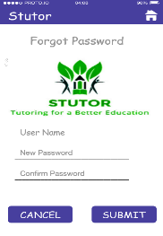

Projects
Proto.io of Stutor : November 28, 2016 - December 16, 2016

Course: AP Computer Science Applications 2016-2017
Partners: James Wang, Vikram Rajan
In this project, we created a prototype solution to a real world problem. We had to do this using our previous knowledge gained just about a week ago from the website proto.io that allows one to protype and app. Our problem that we examined was the lack of proper tutoring at schools. To combat this problem, we created a prototype for “Stutor” which was actually our entrepreneur project for the previous year. This prototype focused on allowing a user to easily find an effective tutor based on what they desire. One problem we had to face was splitting up the work throughout the project since proto.io does not allow multiple developers. To tackle this we designated a certain person to work on the prototype, presentation, and website while rotating daily. This assignment allowed me to gain more exposure to prototyping using proto.io. Additionally, this helped me understand what the proper direction to take is for developing an application. One must first prototype the application and then build it after to ensure all potential flaws can be overcome.